Come Allestire un Acquario di Acqua Dolce
Avere un acquario di acqua dolce è la soluzione ideale se si vuole portare un po' di natura dentro casa. Allestire un nuovo acquario è più facile di quanto sembri. Il numero di gadget e accessori sugli scaffali dei negozi può spaventare, ma tutto quello che ti serve veramente sono le basi dalle quali partire. In breve tempo potrai vedere dei pesci nuotare con grazia all'interno del tuo nuovo acquario d'acqua dolce.
- Sistemare la Vasca e il Supporto
- Installare il Filtro e Aggiungere la Ghiaia
- Aggiungere l'Acqua e il Sistema di Riscaldamento
- Introdurre i Pesci
- Consigli
Indice
Scegli un acquario. La vasca che andrai a scegliere deve essere abbastanza grande da contenere l'acqua necessaria in base al tipo e numero di pesci che programmi di metterci dentro. Ogni tipo di pesce ha bisogno di una determinata quantità di spazio, e produce anche differenti quantità di sporcizia. In generale, più grandi sono i pesci, maggiore sporcizia produrranno, e di conseguenza maggiore sarà la quantità di acqua necessaria. Tieni inoltre a mente che avrai bisogno di ulteriore spazio se programmi di avere anche alghe e altre decorazioni. Esistono svariati calcolatori che possono aiutarti a decidere che pesci tenere in sicurezza in base alle dimensioni della vasca, compatibilità ed esigenze. Una vasca da 200 litri potrebbe essere considerata una misura standard che ti permetterà di tenere una certa varietà di pesci. Se sei un principiante, meglio non andare con dimensioni più grandi al momento. Puoi anche scegliere una vasca da 80 o 100 litri per iniziare, e metterci solo pochi pesci resistenti (Molly, Guppy, Platy, Tetra, piccoli Coridoras, ma mai Ciclidi) per vedere se questo hobby ti appassiona. Qualunque sia la tua decisione, non cominciare con meno di 40 l d'acqua —quindi sono da evitare gli acquari da scrivania. Non saranno grandi abbastanza da poter ospitare i pesci. Se hai intenzione di comprare un piccolo acquario pensa che sarà però difficile mantenere una buona qualità dell'acqua.
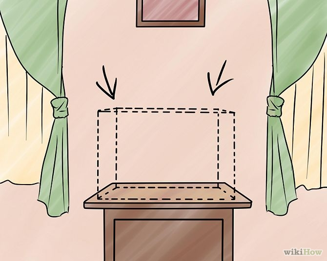
Trova un piedistallo adatto. Gli acquari da 80 l o più hanno bisogno di un supporto idoneo. Comprane uno che sia progettato per le dimensioni e la forma della vasca. Non sottovalutare il peso di un acquario pieno! Devi essere certo che la base sia adatta per le dimensioni dell'acquario o che sia stata rinforzata per resistere al peso dell'acqua. Inoltre, non è sicuro avere un lato della vasca che sporge oltre la base. Mobili come armadi, supporti per la tv, tavoli, o fragili scrivanie in legno potrebbero non essere abbastanza resistenti. Cerca dei kit per acquari nei negozi di animali. Puoi anche trovarli su Internet a un buon prezzo, ma assicurati che non abbiano perdite e puliscili molto bene prima di usarli. Se non compri un kit completo, assicurati che quello da te scelto sia idoneo alle dimensioni della vasca. Scegli la collocazione dell'acquario e del piedistallo. Scegliere il posto giusto è un fattore importante per la salute dei pesci. Devi scegliere un luogo dove la temperatura rimanga costante e la quantità di luce non sia eccessiva. Lascia almeno 10 cm fra la parete e l'acquario per avere sufficiente spazio per il filtro. Ecco alcune cose da tenere bene a mente quando si sceglie dove collocare un acquario: Troppo sole favorisce la crescita di alghe rendendo il mantenimento un incubo. La posizione migliore per un acquario è contro una parete interna lontano dalla luce diretta. Evita di metterlo sotto a un ventilatore - la polvere potrebbe finire nella vasca. Sarebbe anche più difficile mantenere una temperatura costante dell'acqua, una cosa molto importante, se non vitale per alcuni pesci. È anche importante considerare la capacità del pavimento di sopportare il peso dell'acquario una volta pieno. Assicurati che sia supportato da una struttura solida. Se necessario, procurati il progetto della tua casa per individuare la posizione delle travi. Scegli un posto vicino a una presa, tenendo in considerazione la distanza che dovrai percorrere per il ricambio settimanale dell'acqua. Evita anche di avere fili aggrovigliati attorno alla presa. Un'altra buona idea è quella di avere una ciabatta multipla provvista di protezione elettrica, molto utile nei casi di drastici sbalzi di tensione, specie dopo un back-out. Piazza la base della vasca su un pavimento di legno, ma non su moquette o tappeti.
Scegli la collocazione dell'acquario e del piedistallo. Scegliere il posto giusto è un fattore importante per la salute dei pesci. Devi scegliere un luogo dove la temperatura rimanga costante e la quantità di luce non sia eccessiva. Lascia almeno 10 cm fra la parete e l'acquario per avere sufficiente spazio per il filtro. Ecco alcune cose da tenere bene a mente quando si sceglie dove collocare un acquario: Troppo sole favorisce la crescita di alghe rendendo il mantenimento un incubo. La posizione migliore per un acquario è contro una parete interna lontano dalla luce diretta. Evita di metterlo sotto a un ventilatore - la polvere potrebbe finire nella vasca. Sarebbe anche più difficile mantenere una temperatura costante dell'acqua, una cosa molto importante, se non vitale per alcuni pesci. È anche importante considerare la capacità del pavimento di sopportare il peso dell'acquario una volta pieno. Assicurati che sia supportato da una struttura solida. Se necessario, procurati il progetto della tua casa per individuare la posizione delle travi. Scegli un posto vicino a una presa, tenendo in considerazione la distanza che dovrai percorrere per il ricambio settimanale dell'acqua. Evita anche di avere fili aggrovigliati attorno alla presa. Un'altra buona idea è quella di avere una ciabatta multipla provvista di protezione elettrica, molto utile nei casi di drastici sbalzi di tensione, specie dopo un back-out. Piazza la base della vasca su un pavimento di legno, ma non su moquette o tappeti.
Scegli il tipo di filtraggio che vorresti usare. Quelli più comuni e facili da usare sono gli undergravel (sottosabbia) o ad alimentazione che si appende sul retro dell'acquario, il secondo tipo è più adatto ai principianti. Non farti abbindolare dalla tecnologia. I filtri come il Penguin e il Whisper operano sia una filtraggio meccanico sia biologico e sono facili da usare e da pulire. Scegli il TopFin solo se sei già esperto (con il kit TopFin scegli il Whisper). Se scegli un filtro sottosabbia, accertati che la pompa o l'alimentatore siano abbastanza potenti per il volume della vasca. In questo caso, più è grande, meglio lavorerà. Attenzione: se non pulisci regolarmente la ghiaia il filtro si ottura a lungo andare, diventando un'arma mortale. Ricordati che, a dispetto del nome, non puoi usare un filtro sottosabbia se intendi usare substrati di sabbia o altri materiali fini. Se decidi di optare per un filtro ad alimentazione, scegline uno che faccia circolare abbastanza acqua. L'ideale sarebbero 15 litri all'ora per ogni litro di capacità dell'acquario. Ad esempio, una vasca da 30 litri necessita di un filtro che ne faccia circolare almeno 450.
Installa il filtro. Le modalità di istallazione variano a seconda del filtro. Determina quale fra questi si adatta alla tua attrezzatura: In caso di filtri sottosabbia, inserisci il piatto assicurandoti che i tubi siano al loro posto. Se hai una centralina sommergibile, ne basterà uno solo; con la pompa ad aria tradizionale conviene procurarsene due per gli acquari sotto i 120 litri, una per ciascun lato. Non accendere il filtro finché l'acquario non è del tutto pieno. Attacca la pompa dell'aria o la centralina al tubo adatto. Non avviarle per ora. Se hai scelto un filtro ad alimentazione esterna, sistemalo sul retro dell'acquario in un punto in cui l'uscita non crei problemi al livello dell'acqua. Alcuni coperchi per acquari hanno fori appositi per le varie attrezzature. Non accendere il filtro finché l'acquario non è pieno.
Ricopri il fondale con ghiaia o sabbia; circa 5-7 cm di sabbia o ghiaia sono essenziali per mantenere l'acquario in buono stato e per aiutare l'orientamento dei pesci. La ghiaia economica (disponibile in più colori) e la sabbia da cassetta (bianca, scura o naturale) possono essere acquistate nei negozi di prodotti per animali. La sabbia è perfetta per pesci e invertebrati che amano scavare, ma deve essere livellata regolarmente per evitare buchi che potrebbero rovinare l'acquario. Risciacqua il sottostrato con l'acqua pulita prima di aggiungerlo alla vasca. Minore sarà la polvere presente nell'acqua, tanto più velocemente si pulirà quando il filtro verrà avviato. Questo passaggio è fondamentale se utilizzi la sabbia piuttosto che la ghiaia, ma è comunque importante in ogni caso. Pulisci accuratamente la ghiaia. Assicurati che non ci sia del sapone - è letale per i pesci. Forma una leggera pendenza verso l'alto sulla parte posteriore della vasca. Se hai un filtro sottosabbia, distribuisci la ghiaia pulita in uno strato sottile e omogeneo attorno alla superficie del filtro — versala poco alla volta in modo da riuscire a sistemarla meglio evitando anche di graffiare le pareti della vasca. Colloca un piano in cima al sottostrato in maniera che non si disperda quando aggiungi l'acqua.
Aggiungi le piante e le altre decorazioni. Assicurati di sistemarle prima di aggiungere acqua e pesci per evitare di dover mettere le mani dentro la vasca una volta popolata.
Cerca eventuali perdite. Riempi la vasca con circa 5 centimetri di acqua, poi aspetta per mezz'ora. Se ci sono perdite, meglio accorgersene prima di riempire completamente l'acquario. Se non ce ne sono, riempila per un terzo. Fai quest'operazione in un posto in cui non avrai problemi in caso di perdite. Tieni a portata di mano il sigillante nel caso ti serva.
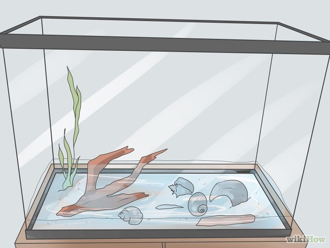
Colloca le piante e le altre decorazioni. Le piante sono decorazioni pratiche. È difficile che un filtro meccanico controlli lo sviluppo del plankton. Le piante vive, invece, sono di grande aiuto. Per alcuni pesci sono necessarie. Oltre alle piante, puoi anche aggiungere dei pezzi di legno o altre decorazioni soprattutto se espressamente progettati per acquari di acqua dolce. Non mettere oggetti a caso nella vasca. Scegli piante che siano adatte tipi di pesci che vuoi prendere. Immergi le radici nella ghiaia, ma non lo stelo o le foglie. Alcune piante hanno bisogno di essere fissate a qualcosa, perciò procurati un po' di filo da pesca (che non danneggi i pesci né le piante) e legale a un pezzo di roccia o di legno pulito.
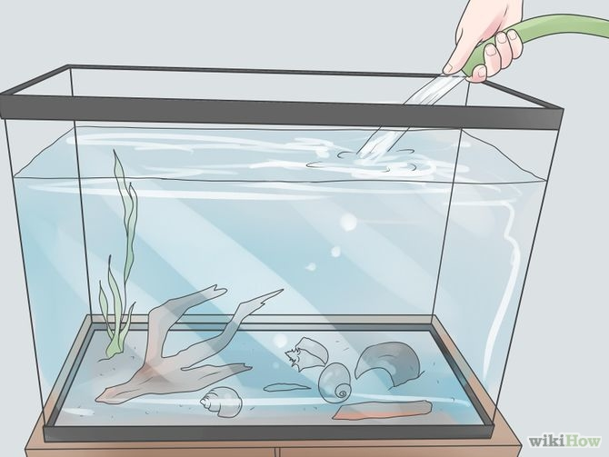
Finisci di riempire la vasca. Una volta che sei sicuro che tutte le decorazioni sono sistemate come desideri, riempi la vasca fino al bordo, lasciando uno spazio di circa 2 cm.
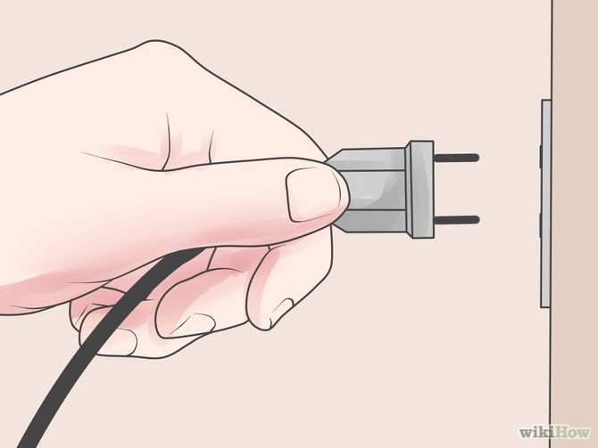
Avvia il filtro. Riempi il serbatoio del filtro con l'acqua, e accendilo! L'acqua dovrebbe lentamente e silenziosamente iniziare a circolare entro un paio di minuti. Se hai un filtro sottosabbia accendi la pompa. L'acqua dovrebbe cominciare a muoversi in senso verticale nel tubo di risucchio. Aspetta un paio di ore, poi controlla che la temperatura sia ancora nel range giusto, che non ci siano perdite e che l'acqua circoli correttamente.
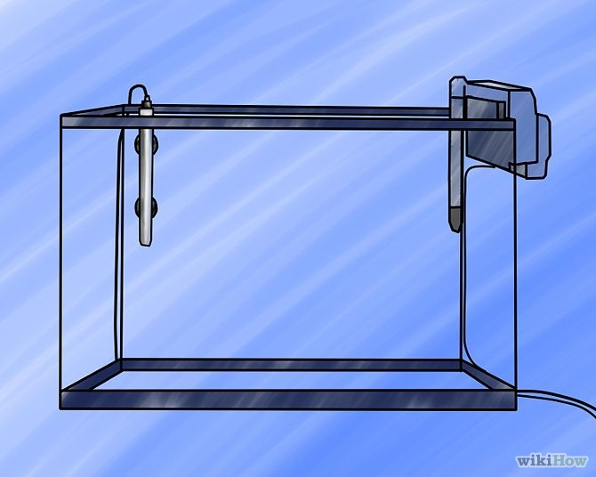
Installa il calorifero (con le ventose) all'interno della vasca. Cerca di posizionarlo vicino alla bocca del filtro che espelle l'acqua. In questo modo, l'acqua verrà riscaldata uniformemente. La maggior parte dei termostati ha un range di temperature che va dai 21 ai 25 °C. Immergi il calorifero e attacca il termometro. Non accenderlo finché l'acquario non è pieno. I caloriferi sommergibili sono i più facili da usare. Procuratene uno con il termostato regolabile, dal momento che ogni tipo di pesce ha bisogno di temperature specifiche. L'ideale è avere 3/5 watt ogni 5 litri di acqua. Alcune lampade (talvolta incluse nei kit) emanano talmente tanto calore da alterare la temperatura dell'acquario drasticamente. Tienilo bene a mente in fase di allestimento.
Aggiungi il decloratore seguendo le istruzioni riportate sull'etichetta (se non hai usato l'acqua potabile). È anche il momento giusto per aggiungere una dose di SafeStart, un catalitico che velocizza la crescita dei batteri buoni.
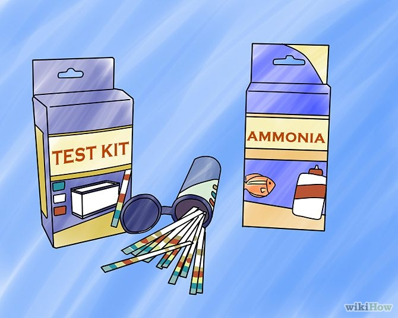
Fai fare un ciclo all'acquario. Per le istruzioni su come eseguire un ciclo senza pesci (il metodo migliore per far prosperare i batteri buoni) leggi come Effettuare un Ciclo a vuoto. Il ciclo va completato prima di immettere i pesci nell'acquario. Potrebbe impiegarci 2 settimane, fino a un mese e mezzo. Durante questo tempo dovrai monitorare i parametri dell'acqua (pH, ammoniaca, nitriti e nitrati). Quando i valori di ammoniaca, nitrito e nitrato si impennano per poi abbassarsi a 0, hai completato il ciclo nitrogeno iniziale e l'acquario è pronto per ospitare i pesci. Per favorire l'eliminazione di ammoniaca e nitriti, potresti dover usare un prodotto apposito. L'unico modo per ridurre i nitrati è cambiare l'acqua e rimuovere fisicamente gli elementi chimici. Ricorda di continuare a testare l'acqua, soprattutto per le vasche nuove. Avrai bisogno di ricambiare giornalmente il 15% di acqua per mantenere la vasca pulita.
Scegli i pesci. Chiedi informazioni al rivenditore per scegliere il tipo di pesci adatto alle tue esigenze. Cerca informazioni anche su internet. Sui forum di amanti dei pesci dovresti trovare consigli utili. Attenzione: alcuni commessi potrebbero non avere molta esperienza e quindi ti darebbero informazioni errate. Cerca un negozio specializzato in cui troverai esemplari di prima qualità e informazioni aggiornate, oltre che accurate. Ad esempio, PlanetPet e UniversoAcquari hanno entrambi una buona scelta di pesci d'acqua dolce e salata. Anche se ti dovessero piacere due tipi di pesci, non è detto che siano compatibili. Se è il tuo primo acquario, non prendere pesci raccomandati per acquariofili più esperti. Considera le dimensioni dei pesci una volta adulti. I guppy sono ottimi per i principianti, ma dipende molto dalle dimensioni della vasca.
Non comprare i pesci tutti insieme. Impara a conoscere le specie che sei intenzionato a ospitare e comprane due piccole (non vale per i pesci che vivono in banchi). Questi dovrebbero essere gruppi di 4 (idealmente più di 6). Ogni due settimane (o una volta che l'acquario ha fatto un mini ciclo, dipende cosa accade prima), compra un nuovo gruppo. Gli ultimi ad arrivare devono essere i pesci più grandi.
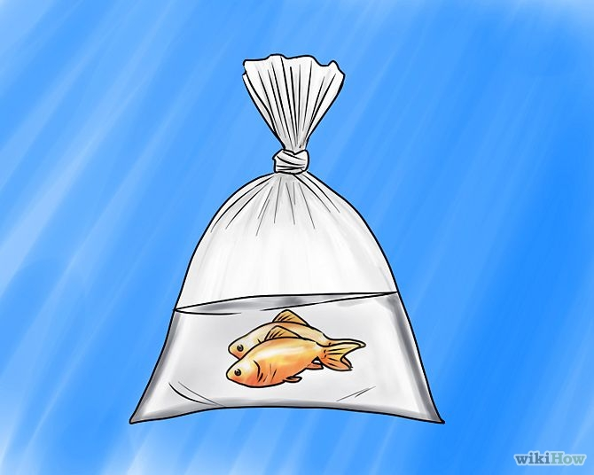
Porta a casa i pesci. Il commesso riempirà un sacchetto di plastica con l'acqua, poi vi riporrà i pesci e infine aggiungerà l'ossigeno. A questo punto, tocca a te. Mentre torni a casa, tieni il sacchetto al sicuro per evitare che possa rotolare o che qualcosa possa cadergli addosso. Vai dritto a casa. I pesci sopravvivono in acqua e ossigeno per 2 ore e mezza al massimo. Se abiti più lontano, assicurati che i pesci vengano sistemati diversamente.
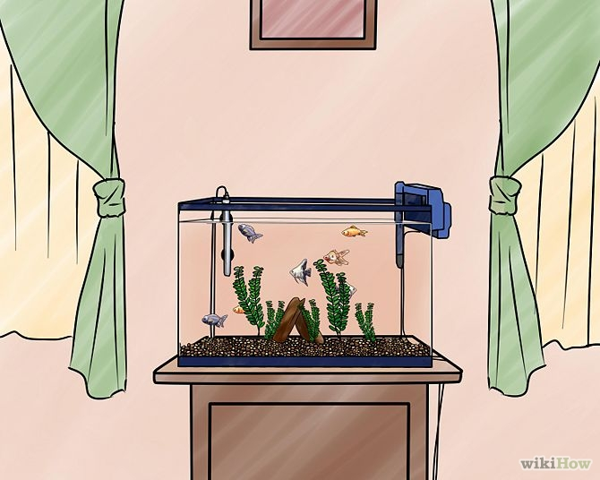
Metti i pesci nell'acquario. Comincia con due o tre pesci per i primi 10 giorni, poi aggiungine altri due o tre, aspetta altri 10 giorni, e così via. Se introduci troppi pesci tutti in una volta in una vasca nuova, l'acqua non riuscita ad avere un ricircolo adeguato, e diventerà rapidamente tossica. La pazienza è la chiave per le prime sei o otto settimane. Detto ciò, un grave errore che commettono molte persone è quello di comprare dei pesci che vivono in banchi, ma solo uno o due. È una cosa crudele e provoca un forte stress ai pesci. In questi casi la quantità minima sarà cinque.
-
-
Fai sempre delle ricerche sui bisogni di qualsiasi essere vivente (pesce, pianta, o invertebrato) che vuoi inserire nell'acquario. Assicurati che sia compatibile con le creature già presenti. Inoltre, devi essere in grado di andare incontro alle sue esigenze. Meglio ottenere le informazioni da più fonti, non credere automaticamente alla prima cosa che leggi!
-
Col tempo, i batteri buoni si raccolgono sulla superficie dell'acqua per eliminare ammoniaca e nitriti. Aggiungere i pesci tutti insieme può affaticare questi batteri, intasando il filtro. Un acquario poco popolato solitamente farà il riciclo in 30-45 giorni: i batteri torneranno stabili e saranno in grado di gestire le scorie prodotte dai pesci. Un numero maggiore di pesci non rende il processo più rapido.
-
Non lasciare la luce accesa tutta la notte: anche i pesci dormono! Hanno bisogno di un periodo di oscurità essendo sprovvisti di palpebre. E se non hai piante vive nell'acquario, accendi la luce solo quando sei a casa e vuoi guardare i tuoi pesci. A loro non servono 14 ore di luce continua e inoltre troppa luce favorisce la proliferazione delle alghe.
-
Se puoi scegliere il tipo di luce, acquista i neon: producono meno calore ed esaltano i colori dei pesci.
-
Fai tante ricerche. Innanzitutto, documentati sulle condizioni dell'acqua nel tuo comune. Ci sono differenze tra vivere in acque "dure" o "dolci" e un pesce nell'acqua giusta sarà più longevo e in salute. A meno che tu non voglia trattare tutta l'acqua destinata all'acquario (può essere costoso oltre che richiedere molto tempo), scegli dei pesci adatti all'acqua che hai a disposizione.
-
Se ti è difficile tenere pulito l'acquario, prendi in considerazione l'idea di usare piante vere. Impediscono all'acqua di intorbidirsi e sono decorative. Assicurati solo di comprarle in un negozio di animali, in modo che non danneggino i pesci.
-
I filtri sottosabbia stanno andando fuori moda per svariate ragioni: non funzionano perfettamente come quelli che si appendono, sono rumorosi e richiedono molta manutenzione.
-
Non tutte le pompe ad aria sono uguali - sulla scatola può esserci scritto "silenziosa". Chiedi maggiori informazioni prima di acquistarla.
-
Se usi filtri sottosabbia, la ghiaia dovrò essere aspirata di tanto in tanto per togliere il materiale organico. In caso contrario, aumenteranno i livelli di ammoniaca o nitriti e i pesci moriranno.
-
150 litri di acqua pesano quasi 200 kg. Questo dovrebbe aiutarti a decidere se hai una struttura che possa reggere tale peso. Tutti gli acquari che contengono più di 400 litri devono essere poggiati su basi apposite.
-
Fai un ciclo a vuoto.
-
Se usi un filtro sottosabbia compra una singola centralina sommergibile invece di una pompa ad aria - è più silenziosa ed efficiente. Usa le stesse linee guida per i filtri ad alimentazione, scegliendoli della misura adatta.
-
Comprare una valvola di ritegno da poco per le tubazioni dell'aria può salvarti dal dover acquistare una pompa nuova qualora andasse via la corrente.
-
Se il tuo filtro fa un rumore di ferraglia, prova a scuotere la parte interna: talvolta l'aria resta intrappolata, provocando rumore.
-
Sistemare la Vasca e il Supporto
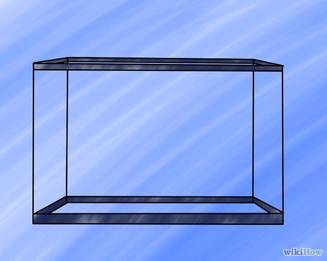Torna all'indice
Installare il Filtro e Aggiungere la Ghiaia
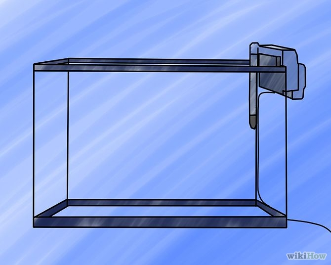Torna all'indice
Aggiungere l'Acqua e il Sistema di Riscaldamento
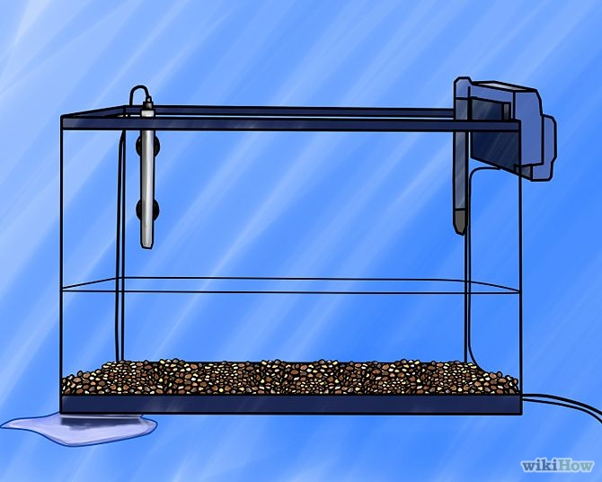Torna all'indice
Introdurre i Pesci
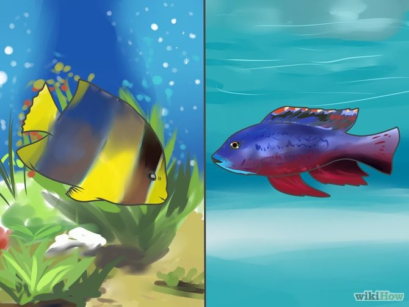
Torna all'indice
Consigli
Torna all'indice
Speciali rigraziomenti hai ragazzi di wikihow che hanno offerto a loro insaputa testo e immagini